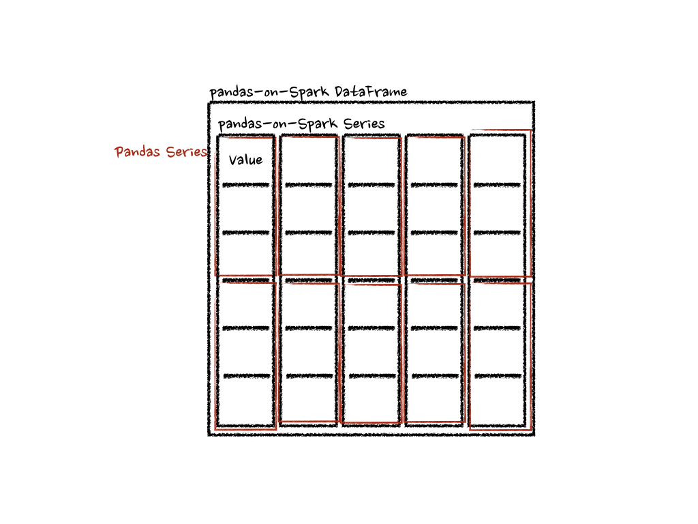
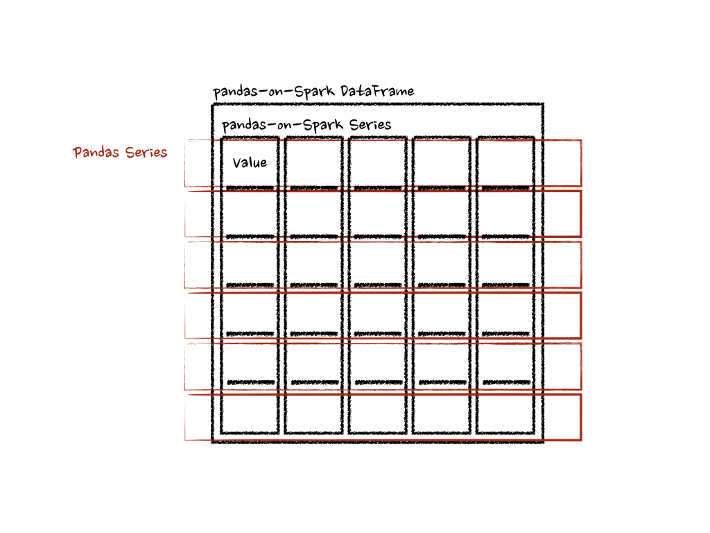
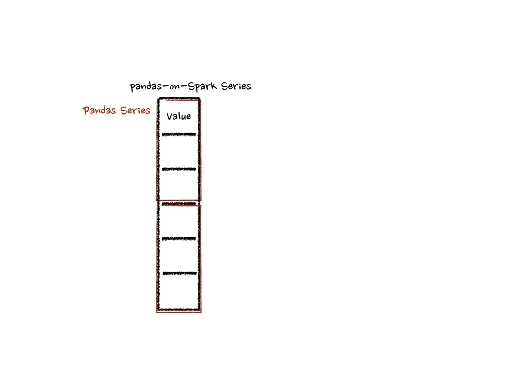

Transform and apply a function¶
There are many APIs that allow users to apply a function against pandas-on-Spark DataFrame such as
DataFrame.transform(), DataFrame.apply(), DataFrame.pandas_on_spark.transform_batch(),
DataFrame.pandas_on_spark.apply_batch(), Series.pandas_on_spark.transform_batch(), etc. Each has a distinct
purpose and works differently internally. This section describes the differences among
them where users are confused often.
transform and apply¶
The main difference between DataFrame.transform() and DataFrame.apply() is that the former requires
to return the same length of the input and the latter does not require this. See the example below:
>>> psdf = ps.DataFrame({'a': [1,2,3], 'b':[4,5,6]})
>>> def pandas_plus(pser):
... return pser + 1 # should always return the same length as input.
...
>>> psdf.transform(pandas_plus)
>>> psdf = ps.DataFrame({'a': [1,2,3], 'b':[5,6,7]})
>>> def pandas_plus(pser):
... return pser[pser % 2 == 1] # allows an arbitrary length
...
>>> psdf.apply(pandas_plus)
In this case, each function takes a pandas Series, and the pandas API on Spark computes the functions in a distributed manner as below.
{kind=link}
In the case of ‘column’ axis, the function takes each row as a pandas Series.
>>> psdf = ps.DataFrame({'a': [1,2,3], 'b':[4,5,6]})
>>> def pandas_plus(pser):
... return sum(pser) # allows an arbitrary length
...
>>> psdf.apply(pandas_plus, axis='columns')
The example above calculates the summation of each row as a pandas Series. See below:
{kind=link}
In the examples above, the type hints were not used for simplicity but it is encouraged to use them to avoid performance penalty. Please refer to the API documentations.
pandas_on_spark.transform_batch and pandas_on_spark.apply_batch¶
In DataFrame.pandas_on_spark.transform_batch(), DataFrame.pandas_on_spark.apply_batch(), Series.pandas_on_spark.transform_batch(), etc., the batch
postfix means each chunk in pandas-on-Spark DataFrame or Series. The APIs slice the pandas-on-Spark DataFrame or Series, and
then apply the given function with pandas DataFrame or Series as input and output. See the examples below:
>>> psdf = ps.DataFrame({'a': [1,2,3], 'b':[4,5,6]})
>>> def pandas_plus(pdf):
... return pdf + 1 # should always return the same length as input.
...
>>> psdf.pandas_on_spark.transform_batch(pandas_plus)
>>> psdf = ps.DataFrame({'a': [1,2,3], 'b':[4,5,6]})
>>> def pandas_plus(pdf):
... return pdf[pdf.a > 1] # allow arbitrary length
...
>>> psdf.pandas_on_spark.apply_batch(pandas_plus)
The functions in both examples take a pandas DataFrame as a chunk of pandas-on-Spark DataFrame, and output a pandas DataFrame. Pandas API on Spark combines the pandas DataFrames as a pandas-on-Spark DataFrame.
Note that DataFrame.pandas_on_spark.transform_batch() has the length restriction - the length of input and output should be
the same - whereas DataFrame.pandas_on_spark.apply_batch() does not. However, it is important to know that
the output belongs to the same DataFrame when DataFrame.pandas_on_spark.transform_batch() returns a Series, and
you can avoid a shuffle by the operations between different DataFrames. In case of DataFrame.pandas_on_spark.apply_batch(), its output is always
treated as though it belongs to a new different DataFrame. See also
Operations on different DataFrames for more details.
{kind=link}
In case of Series.pandas_on_spark.transform_batch(), it is also similar with DataFrame.pandas_on_spark.transform_batch(); however, it takes
a pandas Series as a chunk of pandas-on-Spark Series.
>>> psdf = ps.DataFrame({'a': [1,2,3], 'b':[4,5,6]})
>>> def pandas_plus(pser):
... return pser + 1 # should always return the same length as input.
...
>>> psdf.a.pandas_on_spark.transform_batch(pandas_plus)
Under the hood, each batch of pandas-on-Spark Series is split to multiple pandas Series, and each function computes on that as below:
{kind=link}
There are more details such as the type inference and preventing its performance penalty. Please refer to the API documentations.